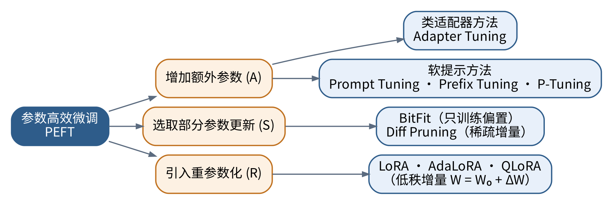
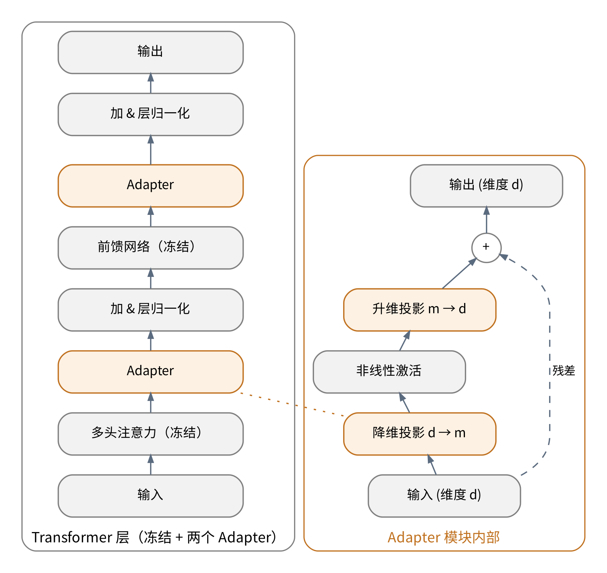
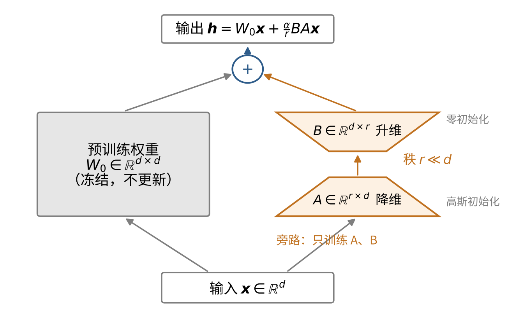
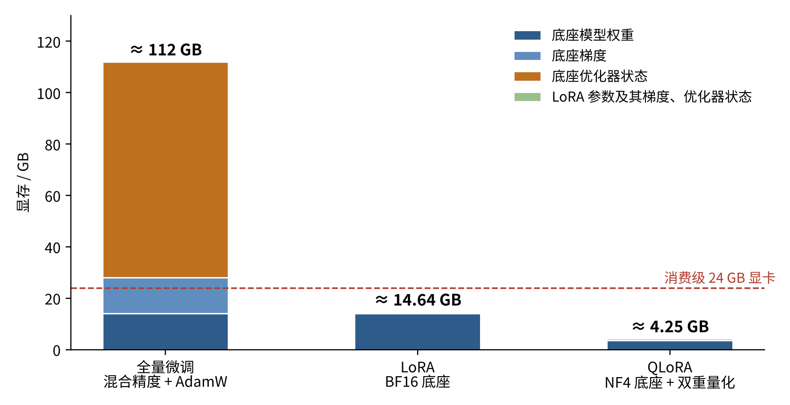

3.6 参数高效微调技术
3.6.1 为什么需要参数高效微调
把预训练模型在下游任务上微调，已经成为处理自然语言任务的标准范式。但随着模型越来越大，全量微调变得越来越难以承受：
- 显存开销大：按 3.4.6 节的估算，全量微调一个 7B 模型（混合精度 + AdamW）仅模型状态就需要约 112 GB，必须动用多张高端 GPU；
- 存储开销大：每个下游任务都要保存一份完整的模型副本。为 100 个客户各微调一个 7B 模型，就要保存 100 份、每份十几 GB 的权重；
- 容易遗忘：所有参数都被修改，模型更容易遗忘预训练获得的通用能力。
为此，研究者提出了参数高效微调（PEFT）方法：固定预训练模型的大部分参数，仅调整其中很小一部分参数（或新增少量参数），达到接近全量微调的效果。 由于 PEFT 本质上是在原模型的基础上学习一个”增量”，它也被称为增量微调（Delta Tuning）。
3.6.2 参数高效微调的分类
参数高效微调方法可以大致分为三类（图 3-12）：
- 增加额外参数（Addition，A）：在模型中加入少量新的可训练参数，原有参数全部冻结。它又分为两小类：类适配器方法在网络内部插入小型模块，如 Adapter Tuning；软提示方法在输入或各层前加入可训练的连续向量，如 Prompt Tuning、Prefix Tuning、P-Tuning；
- 选取部分参数更新（Selection，S）：不增加参数，只选择原模型中的一小部分参数进行训练，如只训练偏置项的 BitFit；
- 引入重参数化（Reparameterization，R）：不直接修改权重，而是把权重的变化量 \(\Delta W\) 用一种参数更少的形式表示，即 \(W = W_{0} + \Delta W\)，如 LoRA 及其变体。

图3-12 参数高效微调方法的分类
从实现上看，这些方法又可以归纳为两个方向：一是添加小型网络模块，保持基础模型不变，只为每个任务训练这些小模块（Adapter、Prefix Tuning、Prompt Tuning 等）；二是对权重的增量进行建模，不修改模型结构，只学习 \(\Delta W\)（Diff Pruning、LoRA 等）。
3.6.3 选取部分参数：BitFit
BitFit 是最简单的 PEFT 方法：冻结所有权重矩阵，只训练网络中的偏置（bias）参数。对 BERT 这样的模型，偏置参数只占总参数的约 0.08%，但在许多中小规模任务上，BitFit 的效果已经接近全量微调。它的局限在于：许多现代大模型（如 LLaMA）的线性层根本不含偏置项，BitFit 也就无从下手。
3.6.4 Adapter Tuning
基本思想：在预训练模型的每一层中插入专门用于下游任务的小型模块（Adapter），微调时冻结模型主体，只训练这些模块，从而大幅减少训练开销。
结构：如图 3-13 所示，Houlsby 等人（2019）提出的方法在每个 Transformer 层中加入两个 Adapter，分别位于多头注意力之后和前馈网络之后。训练时固定原模型的参数，只训练新增的 Adapter 和层归一化参数。

图3-13 Adapter Tuning 的结构
每个 Adapter 是一个”瓶颈”结构：第一个前馈子层（降维投影）把维度为 \(d\) 的输入投影到较低的维度 \(m\)，经过非线性激活后，第二个前馈子层（升维投影）再把它映射回维度 \(d\)，并通过残差连接与输入相加：
\(Adapter\left( \mathbf{h} \right) = \mathbf{h} + W_{up}\, f\left( W_{down}\mathbf{h} \right),\quad\quad W_{down} \in \mathbb{R}^{m \times d},\ W_{up} \in \mathbb{R}^{d \times m}\quad\) (3-26)
通常 \(m \ll d\)，通过控制 \(m\) 的大小就能控制 Adapter 的参数量，每个 Adapter 约有 \(2md\) 个参数。残差连接保证了：只要把 \(W_{up}\) 初始化为接近零，Adapter 在训练开始时就近似于恒等变换，不会破坏原模型。在 BERT 上，Adapter 只训练约 3.6% 的参数，就在 GLUE 基准上达到了与全量微调相差不到 0.4 个百分点的效果。
Adapter 的主要缺点是增加了推理时延：新增的模块串行地插在网络中，推理时无法省去，在逐 Token 生成的场景下，这种额外开销会被放大。
3.6.5 软提示方法
3.5.1 节介绍的提示词工程，是用人能读懂的离散文本来引导模型，称为硬提示（Hard Prompt）。软提示方法则把提示变成了可以训练的连续向量，称为软提示（Soft Prompt）。
Prompt Tuning 保持基础模型的参数不变，为每个特定任务训练一小段（如 20 个）“虚拟 Token”的嵌入向量，拼接在输入序列的最前面，执行该任务时按需加载对应的软提示。若软提示长度为 \(l\)、隐藏层维度为 \(d\)，则可训练参数只有 \(l \times d\) 个。Lester 等人（2021）发现，随着模型规模增大到百亿参数以上，Prompt Tuning 的效果逐渐接近全量微调；但在较小的模型上，它与全量微调的差距明显。
Prefix Tuning 不只在输入层，而是在每一层注意力的 Key 和 Value 前面都加上一段可训练的前缀向量，相当于在不改变大模型的前提下，为每一层的上下文添加适当的”条件”，引导模型表现得更好。由于直接优化前缀向量容易不稳定，Prefix Tuning 通常先用一个小型多层感知机生成前缀，训练完成后再丢弃这个网络，只保留前缀。
P-Tuning 用一个小型的提示编码器（如 LSTM 或 MLP）来生成连续提示，使各个虚拟 Token 之间相互关联；其后的 P-Tuning v2 借鉴了 Prefix Tuning 的思路，在每一层都加入提示，从而在不同规模的模型和更多类型的任务上都取得了接近全量微调的效果。
软提示方法的优点是参数量极小、不改变模型结构；缺点是占用了一部分上下文长度，训练也不如其他方法稳定。
3.6.6 LoRA
1．基本思想
LoRA（Low-Rank Adaptation，低秩适配）由 Hu 等人于 2021 年提出，是目前应用最广泛的参数高效微调方法。它的出发点是一个观察：神经网络中有大量借助矩阵乘法实现的全连接层，预训练模型适配到特定下游任务时，权重的变化量并不需要是”满秩”的，而是具有很低的本征秩（Intrinsic Rank）。换言之，虽然大模型参数很多，但针对一个具体任务，真正需要调整的”方向”只有少数几个。
因此，LoRA 不直接更新原始权重 \(W_{0}\)，而是用两个小矩阵的乘积来表示权重的变化量：
\(W = W_{0} + \Delta W = W_{0} + BA,\quad\quad B \in \mathbb{R}^{d \times r},\ A \in \mathbb{R}^{r \times k},\ r \ll \min(d,k)\quad\) (3-27)
如图 3-14 所示，LoRA 在原始权重旁边增加一条”旁路”：矩阵 \(A\) 负责降维，把输入从 \(k\) 维压缩到 \(r\) 维；矩阵 \(B\) 负责升维，再映射回 \(d\) 维；中间维度 \(r\) 就是所谓的”秩”，用来模拟本征秩。前向计算变为
\(\mathbf{h} = W_{0}\mathbf{x} + \Delta W\mathbf{x} = W_{0}\mathbf{x} + \frac{\alpha}{r}BA\mathbf{x}\quad\) (3-28)
其中 \(\alpha\) 是一个缩放系数，用来在改变 \(r\) 时保持更新幅度大致稳定。训练时 \(W_{0}\) 冻结，只有 \(A\) 和 \(B\) 接收梯度。

图3-14 LoRA 的结构
2．初始化
\(A\) 用随机高斯分布初始化，\(B\) 初始化为零矩阵。这样在训练开始时 \(BA = 0\)，模型的输出与原预训练模型完全一致，微调从一个”不破坏原模型”的起点平稳开始。
3．参数量
原始权重矩阵有 \(d \times k\) 个参数，而 LoRA 只需训练 \(r \times (d + k)\) 个参数。以 \(d = k = 4096\)、\(r = 8\) 为例：
\[\frac{r(d + k)}{dk} = \frac{8 \times (4096 + 4096)}{4096 \times 4096} = \frac{65536}{16777216} \approx 0.39\%\]
【例 3-3】 对 LLaMA-7B（32 层，\(h = 4096\)，前馈网络中间维度 11008）应用 \(r = 8\) 的 LoRA，分别计算以下两种设置下的可训练参数量：（1）只作用于注意力的 \(W_{q}\) 和 \(W_{v}\)（LoRA 原论文的设置）；（2）作用于全部 7 个线性层（\(W_{q}\)、\(W_{k}\)、\(W_{v}\)、\(W_{o}\) 及前馈网络的三个矩阵）。
解：（1）每层两个 \(4096 \times 4096\) 的矩阵，每个需 \(8 \times (4096 + 4096) = 65536\) 个参数，32 层共 \(2 \times 65536 \times 32 \approx 4.2 \times 10^{6}\) 个，约占 67 亿参数的 0.06%。
（2）注意力的 4 个矩阵每层共 \(4 \times 65536 = 262144\) 个参数；前馈网络的 3 个矩阵（\(4096 \times 11008\) 或 \(11008 \times 4096\)）每个需 \(8 \times (4096 + 11008) = 120832\) 个，共 362496 个。每层合计 624640 个，32 层共约 \(2.0 \times 10^{7}\) 个，约占 0.3%。
4．LoRA 的优势
- 训练开销小：可训练参数通常不到原模型的 1%，梯度和优化器状态的显存几乎可以忽略。LoRA 论文报告，在 GPT-3 175B 上，可训练参数减少了约 10000 倍，训练显存减少约 2/3；
- 效果好：在众多数据集上，LoRA 只训练极少量参数，性能就能与全量微调相当，在某些任务上甚至更好；
- 无额外推理时延：训练完成后，可以把 \(\frac{\alpha}{r}BA\) 直接加到 \(W_{0}\) 上，合并成一个与原来形状相同的矩阵 \(W\)，推理时与原模型的计算量完全一样。这是它相对于 Adapter 的重要优势；
- 便于多任务切换：每个任务只需保存一组几十 MB 大小的 \(A\)、\(B\) 矩阵，同一个基础模型可以按需加载不同的 LoRA 模块，服务多个任务或用户。
3.6.7 AdaLoRA
LoRA 为所有被适配的权重矩阵设定了相同的秩 \(r\)，但不同层、不同矩阵对下游任务的重要性显然不同。AdaLoRA（Adaptive LoRA）据此动态调整各增量矩阵的秩：为关键的增量矩阵分配较高的秩，以捕捉更精细、更具任务特性的信息；同时降低较不重要矩阵的秩，以防止过拟合并节省计算预算。
具体做法是，以奇异值分解（SVD）的形式对增量进行参数化：
\(\Delta W = P\Lambda Q,\quad\quad P \in \mathbb{R}^{d \times r},\ \Lambda = diag\left( \lambda_{1},\ldots,\lambda_{r} \right),\ Q \in \mathbb{R}^{r \times k}\quad\) (3-29)
训练中根据重要性指标裁剪掉不重要的奇异值 \(\lambda_{i}\)（置为零），但保留对应的奇异向量，以便将来有需要时恢复。由于对大矩阵做精确的 SVD 计算代价很高，AdaLoRA 并不真正进行分解，而是在训练损失中加入一个正则项，约束 \(P\) 和 \(Q\) 近似正交：
\(R(P,Q) = \left. \parallel P^{\top}P - I \right.\parallel_{F}^{2} + \left. \parallel QQ^{\top} - I \right.\parallel_{F}^{2}\quad\) (3-30)
这样既避免了大量的 SVD 计算，又稳定了训练。
3.6.8 QLoRA
LoRA 虽然大幅减少了梯度和优化器状态的显存，但冻结的基础模型本身仍要以 16 位精度加载：7B 模型约 14 GB，65B 模型约 130 GB。QLoRA（Quantized LoRA）由 Dettmers 等人于 2023 年提出，其核心思想是：把冻结的基础模型量化到 4 位存储，再在其上训练 16 位精度的 LoRA 模块。 前向和反向计算时，4 位权重被临时反量化为 BF16 参与运算，梯度则只流向 LoRA 参数。QLoRA 引入了三项关键技术：
（1）4 位 NormalFloat（NF4）。 预训练模型的权重近似服从均值为零的正态分布。普通的 4 位整数（INT4）把 16 个量化等级均匀地分布在取值区间上，而 NF4 按照标准正态分布的分位数来设置这 16 个等级，使每个等级覆盖的权重数量大致相同。对于正态分布的权重，这是信息论意义上最优的 4 位数据类型，其实证效果优于 4 位整数和 4 位浮点数（FP4）。量化时，权重按 64 个一组（块）进行处理：先用块内绝对值的最大值 \(c\) 把权重缩放到 \(\lbrack - 1,1\rbrack\)，再把每个值映射到最接近的 NF4 等级 \(q_{j}\)，只存储等级的 4 位编号；反量化时有
\(\widehat{w} = c \cdot q_{j}\quad\) (3-31)
（2）双重量化（Double Quantization）。 每 64 个权重需要额外保存一个 32 位的缩放常数 \(c\)，平均每个参数多占 \(32/64 = 0.5\) 位。双重量化把这些常数再量化一次（以 256 个为一组量化为 8 位），使额外开销降至约 \(8/64 + 32/(64 \times 256) \approx 0.127\) 位/参数。对 65B 模型而言，这一项就能节省约 3 GB 显存。
（3）分页优化器（Paged Optimizer）。 训练中偶尔会因为长序列等原因出现显存使用峰值而导致内存溢出。分页优化器利用 NVIDIA 的统一内存特性，在 GPU 显存紧张时自动把优化器状态分页换出到 CPU 内存，需要时再换回，从而避免训练因显存不足而中断。
借助这些技术，QLoRA 首次实现了在单张 48 GB 显卡上微调 650 亿参数的模型，而且效果与 16 位全量微调基本相当。用 QLoRA 训练的 Guanaco 模型在当时的对话基准上达到了 ChatGPT 约 99% 的水平。QLoRA 让个人开发者和学生在消费级显卡上微调大模型成为可能。
3.6.9 显存需求对比
【例 3-4】 对一个 7B 模型进行微调，比较全量微调与 PEFT 所需显存（不计激活值）。设基础模型以 FP32 加载，PEFT 新增的可训练参数为原模型的 2.5%，同样以 FP32 训练、使用 AdamW 优化器。
解： 全量微调时，权重 28 GB，梯度 28 GB，AdamW 的 \(\mathbf{m}\)、\(\mathbf{v}\) 两个状态 56 GB，合计 112 GB。
使用 PEFT 时，基础模型冻结，只占权重 28 GB，没有梯度和优化器状态；新增参数为 \(7 \times 10^{9} \times 2.5\% = 1.75 \times 10^{8}\) 个，其权重、梯度各占 0.7 GB，两个优化器状态共占 1.4 GB，合计 2.8 GB。总计约 \(28 + 2.8 = 30.8\) GB，约为全量微调的 27%。
可以看到，PEFT 节省的主要是梯度和优化器状态。若进一步把基础模型改用 BF16 加载，显存还能再减半。图 3-15 对比了更贴近实际的三种配置：混合精度全量微调、BF16 底座的 LoRA、NF4 底座的 QLoRA（LoRA 均作用于全部线性层，\(r = 16\)，可训练参数约 4000 万个）。

图3-15 微调 7B 模型的显存对比（不含激活值与框架开销）
需要注意，上述估算没有计入激活值：即使基础模型冻结，反向传播时梯度仍要穿过整个网络才能到达各层的 LoRA 模块，因此激活值并不会因为使用 PEFT 而减少。实际微调时，通常还要配合激活重计算等技术来控制显存。
3.6.10 方法比较
表 3-11 总结了本节介绍的几种参数高效微调方法。
表3-11 参数高效微调方法的比较
| 方法 | 类别 | 可训练参数的位置 | 典型参数占比 | 推理是否增加开销 | 主要特点 |
|---|---|---|---|---|---|
| BitFit | S | 原有的偏置项 | 约 0.1% | 否 | 最简单；依赖模型含有偏置 |
| Adapter | A | 每层插入的瓶颈模块 | 0.5%～5% | 是（串行模块） | 效果稳定；有额外时延 |
| Prompt Tuning | A | 输入层前的软提示 | <0.01% | 略增（占用上下文） | 参数最少；小模型上效果较差 |
| Prefix Tuning / P-Tuning v2 | A | 每层 K、V 前的前缀 | 0.1%～1% | 略增（占用上下文） | 适用面更广；训练不够稳定 |
| LoRA | R | 权重旁路的低秩矩阵 | 0.1%～1% | 否（可合并） | 效果好、使用最广 |
| AdaLoRA | R | 秩自适应的增量矩阵 | 与 LoRA 相当 | 否（可合并） | 按重要性分配参数预算 |
| QLoRA | R | 4 位底座上的 LoRA | 与 LoRA 相当 | 视部署方式而定 | 显存最省，单卡可调大模型 |
【小结】 参数高效微调的共同思路是”冻结大部分，只学一点点”。在当前实践中，LoRA 及其量化版本 QLoRA 是最常用的选择：它们不改变模型结构、不增加推理开销，又能把微调大模型的门槛从多卡集群降低到单张显卡。